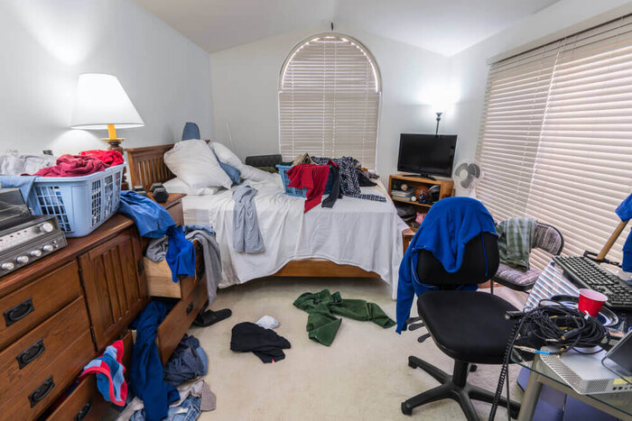

My mother always tells me that i probably have OCD because of how I like things organized. She is most-likely right. My cleaning and organizing job started picking up when I was babysitting and after I put the kids to sleep I went around the house tidying things up. I started picking up toys and games, and then started cleaning counters, and then eventually started to organize stuff so it looked good on the shelves. It wasn't til the parents got home and saw how neat everything was that they wanted me to help organize their pantry sometiume. I didn't realize how little time people had to go and organize stuff so I started asking around and seeing if anyone need help cleaning and organizing their house.

For the case of people being allergic to certain chemicals or cleaners, I will usually ask the family that hires me to supply the cleaners that they use to normally clean their house, but I am willing to supply my own cleaners and tools if you want. I am comfortable cleaning all kids of places: bathrooms, kitchens, bedrooms, garages, and even cars. I always negotiate the price when discussing the scheduled time because pricing is very dependable on how the environment I am cleaning/organizing.
